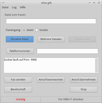

Analog faxen
Dieser Artikel wurde für die folgenden Ubuntu-Versionen getestet:
Ubuntu 14.04 Trusty Tahr
Zum Verständnis dieses Artikels sind folgende Seiten hilfreich:
Die Kombination aus der Software efax  und einem Analogmodem bietet eine einfache Möglichkeit, Faxe zu empfangen und zu senden. Auch das direkte Senden eines Faxes mit einem Drittprogramm (z.B. OpenOffice.org oder XSane) ist möglich. Das Programm ist allerdings schon recht alt, die letzte Version 0.9a-19 stammt aus dem Jahr 2006.
und einem Analogmodem bietet eine einfache Möglichkeit, Faxe zu empfangen und zu senden. Auch das direkte Senden eines Faxes mit einem Drittprogramm (z.B. OpenOffice.org oder XSane) ist möglich. Das Programm ist allerdings schon recht alt, die letzte Version 0.9a-19 stammt aus dem Jahr 2006.
Installation¶
Folgende Pakete müssen installiert [1] werden:
efax (universe)
efax-gtk (universe )
 mit apturl
mit apturl
Paketliste zum Kopieren:
sudo apt-get install efax efax-gtk
sudo aptitude install efax efax-gtk
Konfiguration¶

Eventuell müssen unter "Datei -> Einstellungen" zwei Einstellungen vorgenommen werden:
Änderung des Ports¶
Der Standardeintrag im Feld "serial device" ist ttyS1. Über die Zahl am Ende wird der COM-Port festgelegt. Allerdings beginnt bei Linux-Systemen die Benennung der COM-Ports mit einer Null. Das heißt, dass ttyS0 für COM1 und ttyS1 für COM2 steht. Wenn das Analogmodem an COM-Port 1 angeschlossen ist, dann muss der Eintrag auf ttyS0 geändert werden.
Änderung der Modem Class¶
Hier ist der Standardeintrag "Auto". Wenn kein ordentlicher Faxbetrieb möglich ist, kann dieses daran liegen, dass die Modem-Klasse nicht automatisch korrekt erkannt wird. In diesem Fall kann man ausprobieren, ob ein Festlegen der Modem-Klasse das Problem beseitigt. Gewählt werden kann zwischen den Klassen 1, 2 und 2.0.
Internes Modem benutzen¶
Will man ein internes Modem (z.B. bei einem Laptop) nutzen, so kann es sein, dass man zusätzlich das Paket
sl-modem-daemon (multiverse)
mit apturl
Paketliste zum Kopieren:
sudo apt-get install sl-modem-daemon
sudo aptitude install sl-modem-daemon
installieren muss [1] und den Port anschließend auf "ttySL0" ändern muss (siehe SmartLink).
Benutzung¶
Eine Beschreibung zur Bedienung von efax liefert die Hilfefunktion des Programms. Diese kann über F1 aufgerufen werden.
Fax senden und empfangen¶
Soll ein Dokument gesendet werden, so muss dieses im PostScript-Format mit der Endung .ps vorliegen. Eine entsprechende Datei erhält man, indem man in einem Programm (etwa OpenOffice.org) beim Drucken die Option "Ausdruck in Datei" und als Format "PostScript" wählt.
Es kann aber auch versucht werden, eine PDF Datei zu erstellen. Zumindest mit LibreOffice funktioniert dies problemlos.
Gesendete Faxe ansehen¶
Über den Menüpunkt Liste der gesendeten Faxe kann man gesendete Faxe aufrufen und anzeigen lassen. Hierzu muss ggf. ein entsprechendes Anzeigeprogramm wie GhostScript installiert werden, dass Postscript versteht.
Fax senden über ein externes Programm¶
Anstatt eine Postscriptdatei zu erzeugen, um diese in einem zweiten Schritt als Fax zu versenden, lässt sich auch eine direkte Verknüpfung zwischen dem Schreibprogramm und efax erstellen. Hierzu ist ein virtueller Netzwerkdrucker einzurichten, dessen Ausgabe direkt von efax über einen Port abgegriffen wird. Die Einrichtung eines solchen Druckers ist z.B. über die Druckerverwaltung "System -> Systemverwaltung -> Drucken" möglich.
Neuer Drucker
Verbindung auswählen:
AppSocket/HP JetDirectHostname:
localhostPort:
9900Druckertyp:
Generic -> Raw Queue
Wenn der Drucker richtig eingerichtet ist, steht in der Konfigurationsdatei /etc/cups/printers.conf der folgende Eintrag:
socket://localhost:9900
Eventuell ist der Eintrag anzupassen.
Achtung!
efax startet nicht automatisch! Bevor ein Fax von z.B. OpenOffice per virtuellem Drucker gesendet werden kann, muss efax gestartet worden sein. efax nimmt den Druckauftrag dann über Port 9900 entgegen.
Problembehebung¶
Falsche Antwort nach Kommando +FDT¶
efax-gtk kann sowohl Faxe empfangen als auch senden. Bei manchen Modems (vor allem USB-Modems) kann es passieren, dass sich das Modem nicht in den FAX-Datenübertragungsmodus setzen lässt, während es auf Bereitschaft (bzw. Faxempfang) geschaltet ist. Daher muss vor dem Versenden die Bereitschaft gestoppt werden, indem man die Schaltfläche "Stop" anklickt. Danach lässt sich das FAX ohne Probleme versenden. Anschließend kann man das System wieder in den Bereitschaftsmodus versetzen, um Faxe empfangen zu können.
Zugriff verweigert¶
Kommt beim ersten Versuch mit einem Faxmodem die Meldung, dass der Zugriff auf das Gerät verweigert wurde, muss dem aktuellen Benutzer erlaubt werden, Modems zu benutzen. Dies erfolgt, indem die entsprechenden Benutzerrechte "Modems verwenden" gesetzt werden [2]. Faktisch muss man also Mitglied der Gruppe dialup sein.
 Übersichtsartikel
Übersichtsartikel- Erstellt mit Inyoka
-
 2004 – 2017 ubuntuusers.de • Einige Rechte vorbehalten
2004 – 2017 ubuntuusers.de • Einige Rechte vorbehalten
Lizenz • Kontakt • Datenschutz • Impressum • Serverstatus -
Serverhousing gespendet von